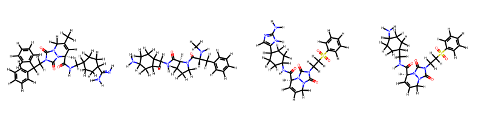
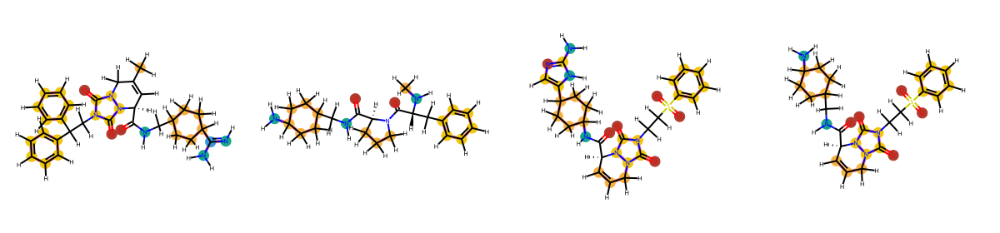

import openpharmacophore as oph
from openpharmacophore.visualization import draw_ligands, draw_ligands_chem_feats
from IPython.display import SVG
import pprint
Ligand preparation for pharmacophore extraction
We want to prepare the ligands of thrombin for pharmacophore extraction
We start by creating a loading ligands from a list of smiles representing thrombin ligands
ligands_smi = [
r"[H]/N=C(\C1CCC(CC1)CNC(=O)[C@@H]2C=C(CN3N2C(=O)N(C3=O)CC(c4ccccc4)c5ccccc5)C)/N",
r"CN[C@H](Cc1ccccc1)C(=O)N2CCC[C@H]2C(=O)NCC3CCC(CC3)N",
r"c1ccc(cc1)S(=O)(=O)CCN2C(=O)N3CC=C[C@H](N3C2=O)C(=O)NC4CCC(CC4)c5cnc([nH]5)N",
r"c1ccc(cc1)S(=O)(=O)CCN2C(=O)N3CC=C[C@H](N3C2=O)C(=O)NCC4CCC(CC4)N",
]
ligands = oph.load_ligands(ligands_smi, form="smi")
for lig in ligands:
lig.generate_conformers(1)
draw_ligands(ligands, n_per_row=4, pretty=True)

chem_feats = []
for lig in ligands:
chem_feats.append(lig.get_chem_feats(conf_ind=0))
# Print a sample
for ii, cfc in enumerate(chem_feats):
print(f"\nLigand {ii + 1}")
pprint.pprint(cfc.aromatic)
Ligand 1
[ChemFeat(coords=<Quantity([-0.81099256 0.31006934 1.89023959], 'angstrom')>, type='aromatic ring', atom_indices=None),
ChemFeat(coords=<Quantity([-3.95879838 -1.85292299 -0.22834981], 'angstrom')>, type='aromatic ring', atom_indices=None),
ChemFeat(coords=<Quantity([-6.17809288 2.44271196 -0.43983829], 'angstrom')>, type='aromatic ring', atom_indices=None)]
Ligand 2
[ChemFeat(coords=<Quantity([-5.24476067 -1.94529945 0.54815532], 'angstrom')>, type='aromatic ring', atom_indices=None)]
Ligand 3
[ChemFeat(coords=<Quantity([-2.48212082 -2.62433606 1.18312841], 'angstrom')>, type='aromatic ring', atom_indices=None),
ChemFeat(coords=<Quantity([6.0269765 2.374574 0.66145636], 'angstrom')>, type='aromatic ring', atom_indices=None),
ChemFeat(coords=<Quantity([-3.9939535 2.04834013 -0.63424838], 'angstrom')>, type='aromatic ring', atom_indices=None)]
Ligand 4
[ChemFeat(coords=<Quantity([-2.0206092 2.74780789 -0.91556143], 'angstrom')>, type='aromatic ring', atom_indices=None),
ChemFeat(coords=<Quantity([-4.68955664 -3.27533275 -0.87192774], 'angstrom')>, type='aromatic ring', atom_indices=None)]
drawing = draw_ligands_chem_feats(ligands, lig_size=(300, 280))
SVG(drawing.GetDrawingText())
